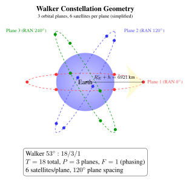

Chapter 25: Mega-Constellations and LEO Broadband Networks¶
25.1 Introduction¶
Broadband internet access from low Earth orbit represents the most ambitious and consequential commercial satellite programme in history. Where the original LEO communications ventures of the 1990s—Iridium (66 satellites, voice), Globalstar (48 satellites, voice/data), Orbcomm (35 satellites, machine-to-machine data)—targeted niche markets and mostly failed commercially, the current generation operates on an entirely different scale: thousands to tens of thousands of satellites, phased array antennas on both space and ground segments, reusable launch vehicles reducing per-kg costs by 10\(\times\), and markets targeting the many people and organisations worldwide that lack affordable broadband.
LEO broadband constellations offer fundamentally different performance characteristics from geostationary satellites: propagation delay of 7–25 ms (vs 240 ms for GEO), free-space path loss about 36 dB lower at 550 km than at 35,786 km, and global including polar coverage—but require thousands of satellites instead of three for full global coverage, necessitating large-scale manufacturing and autonomous operations.
The commercial drivers are compelling. The global broadband gap encompasses not only rural unserved populations but also maritime (tens of thousands of ocean-going vessels), aviation (commercial and business aviation with 10,000+ aircraft airborne at any moment), enterprise connectivity in remote locations (mining, oil/gas, military forward deployed), and developing-nation mobile backhaul. Market-size estimates for these segments, which differ widely between analysts, run to tens of billions of dollars a year.
25.2 Constellation Design Principles¶
25.2.1 Walker Constellations¶
The Walker \(\delta\) and star constellation families provide systematic coverage analysis for circular orbit constellations. Walker notation: \(i:T/P/F\) where \(i\) is orbital inclination, \(T\) is total number of satellites, \(P\) is number of orbital planes, and \(F\) is the phasing factor (0 to \(P-1\)) governing the relative phase between adjacent planes.
Satellites in a plane are uniformly spaced by \(360\degree{}/S\) where \(S = T/P\) is satellites per plane. The phasing between adjacent planes is \(F \times 360\degree{} / T\) in mean anomaly.
Coverage analysis: The coverage radius \(\rho\) on the ground (angular radius from the sub-satellite point at which the satellite elevation angle equals the minimum \(E_{\min}\)) is:
where \(R_E = 6{,}371\) km is Earth radius and \(h\) is orbit altitude. For \(h = 550\) km, \(E_{\min} = 25\degree{}\):
For continuous single-satellite coverage at latitude \(\phi\), the required number of planes \(P\) and satellites per plane \(S\) satisfy:
For \(\rho = 8.5\degree{}\): \(T_{\min} \approx 2/(1 - \cos 8.5\degree{}) \approx 2/0.011 \approx 181\) satellites for bare continuous single-coverage globally. With \(E_{\min} = 25\degree{}\), Starlink’s 1,584 satellites in the 53 shell provide comfortable multiple-fold coverage at mid-latitudes with significant link margin.
Range and elevation angle: The slant range \(d\) from a ground station to a satellite at elevation angle \(E\) above an orbital altitude \(h\) is:
At \(h = 550\) km, \(E = 25\degree{}\): \(d = \sqrt{6921^2 - 6371^2 \times \cos^2 25\degree{}} - 6371\sin 25\degree{} \approx 1{,}124\) km.

25.2.2 Altitude Tradeoffs¶
Altitude selection involves fundamental engineering tradeoffs that determine constellation size, latency, link budget, and satellite lifetime:
Path loss: Free-space path loss scales as \(L_{FSPL} = (4\pi d/\lambda)^2\). Comparing 550 km (Starlink) to 35,786 km (GEO) at Ka-band (20 GHz, \(\lambda = 15\) mm):
LEO at 550 km enjoys a 36 dB path loss advantage over GEO—equivalent to needing \(10^{3.63} = 4{,}265\times\) less transmit power for the same received SNR. This enables small user antennas and low-power user terminals.
One-way propagation latency:
At 550 km zenith: \(\tau = 550{,}000/c = 1.83\) ms; at slant range 1,124 km (\(E = 25\degree{}\)): \(\tau = 3.7\) ms. Round-trip time (RTT) for LEO: \(\sim\)7 ms propagation-only. Adding processing, queuing, and routing: total RTT \(\sim\)25–60 ms. For GEO: propagation RTT \(= 2 \times 35{,}786 \times 2/c = 477\) ms; total RTT \(\sim\)600 ms. The \(\sim\)600 ms GEO latency was incompatible with real-time gaming, VoIP, and video conferencing—key residential broadband use cases that LEO constellations serve natively.
Satellite lifetime: At 550 km, the atmospheric density produces sufficient drag to deorbit a satellite within \(\sim\)5 years at solar maximum—convenient for the FCC’s 5-year deorbit rule. At 1,200 km (OneWeb), natural deorbit takes \(\sim\)200 years; active propulsion must deorbit the satellite at end-of-life. At 350 km, deorbit takes only \(\sim\)30–60 days, providing excellent deorbit assurance but requiring continuous propulsive station-keeping to maintain altitude (\(\Delta v \sim\)5–10 m/s/month at this altitude).
Van Allen belt avoidance: COTS component survival is compromised within the inner Van Allen belt (1,000–8,000 km altitude, enhanced proton flux 10–1,000 MeV). Mega-constellations at 550 km are safely below the inner belt; OneWeb at 1,200 km is at the inner edge; MEO at 5,000–20,000 km must use radiation-hardened components.
25.2.3 Inter-Satellite Links¶
Inter-satellite optical links (OISL) transform a collection of relay satellites into an orbital internet router, enabling end-to-end routing without intermediate ground station hops.
Optical ISL geometry (Starlink Gen2): Each satellite carries 4 OISLs (2 in-plane to adjacent satellites, 2 cross-plane to adjacent orbital planes), using terminals developed by SpaceX. Operating at 1550 nm, laser beam divergence \(\theta \approx \lambda/D_{\text{aperture}} \approx 16\) \(\mu\)rad for a 10 cm aperture, requiring pointing accuracy of a few microradians or better. For \(d = 1{,}500\) km inter-satellite range, the received power from a simple link-budget estimate is:
For \(P_T = 1\) W, \(D_T = D_R = 10\) cm, \(d = 1{,}500\) km, \(\lambda = 1550\) nm: \(P_r \approx 18\) \(\mu\)W (\(-17\) dBm). A coherent receiver needs roughly 100 photons per bit, about \(-29\) dBm at 100 Gbps, so this leaves a margin of about 12 dB before pointing and implementation losses (an illustrative estimate, not a published design).
Cross-plane ISL challenges: Satellites in adjacent planes have relative velocities of up to 14 km/s in near-polar constellations. The Doppler shift at 1550 nm for 14 km/s:
This massive Doppler shift (9 GHz at \(\sim\)194 THz carrier) must be compensated by the coherent receiver’s frequency estimation loop. Additionally, high relative velocity near the poles causes the cross-plane link angle to change rapidly, requiring fast gimbal slewing.
Routing advantage over fibre: Optical fibre has refractive index \(n \approx 1.5\), giving propagation speed \(c/n \approx 0.67c\). Free-space ISLs propagate at \(c = 3\times10^8\) m/s. For a 10,000 km terrestrial fibre path, transit time \(= 10{,}000/(0.67 \times 3\times10^5) = 49.7\) ms, versus about 33 ms for a path of the same length at \(c\) (a real satellite route is longer than the ground distance, since it climbs to orbit and zigzags between satellites, which reduces the advantage). Over long routes, inter-satellite links can therefore offer lower latency than fibre.
25.3 Starlink (SpaceX)¶
25.3.1 Architecture Overview¶
Starlink is the world’s largest satellite constellation by any measure—more than 5,000 satellites in orbit in early 2024 and more than 7,000 in 2025, and growing. The architecture is organised into “shells” (groups of satellites at a specific altitude and inclination) and “generations” (satellite hardware generations):
Generation 1 shells (primary operational fleet):
-
53 inclined, 540–570 km: 1,584 satellites in 72 planes of 22 (primary coverage shell)
-
70 inclined, 570 km: 720 satellites in 36 planes (higher latitude coverage)
-
97.6 SSO, 560 km: 348 satellites (sun-synchronous for polar coverage)
Gen2 Mini: Launched from Falcon 9 starting 2023 (21 per F9 vs 60 for Gen1 due to size increase); approximately 800 kg mass, larger antenna array, higher capacity per satellite. Future Gen2 “full size” (\(\sim\)1,250 kg) requires Starship.
Satellite design: Flat-panel form factor enabling stacked launch configuration—60 Gen1 or 21 Gen2 Mini per Falcon 9. A single deployable solar array wing supplies the power. The early satellites used a krypton Hall-effect thruster of SpaceX’s own design with a specific impulse of the order of 1,500 s for orbit raising, station-keeping (drag make-up at 550 km) and end-of-life deorbit.
The total krypton propellant budget for 5-year deorbit: using \(\Delta v = I_{sp} g_0 \ln(m_0/m_f)\) with \(\Delta v \approx 100\) m/s (lowering the orbit from 540 km to a perigee of about 350 km needs roughly this much), \(m_0 = 295\) kg, \(I_{sp} = 1{,}500\) s: \(m_f = m_0 \exp(-\Delta v/(I_{sp}g_0)) = 295 \exp(-100/14{,}715) = 295 \times 0.9932 = 293\) kg. Only \(\sim\)2 kg of krypton is required for such a manoeuvre, illustrating the efficiency of high-\(I_{sp}\) propulsion (an illustrative calculation, not SpaceX data).
25.3.2 User Terminals¶
The user terminal (UT) is the critical product enabling the consumer market. Starlink’s terminal evolution reflects dramatic cost reductions:
-
Gen1 circular “Dishy”: about 59 cm diameter, a phased array that is steered electronically with a motorised tilt, $499 retail at launch in 2021, reported to cost SpaceX considerably more to make.
-
Flat rectangular phased array (from 2022): about \(30 \times 50\) cm, electronically steered, with a retail price in the $500–600 range at its introduction.
-
High Performance terminal: a larger flat panel for enterprise, maritime and aviation customers.
-
Starlink Mini: a compact portable terminal of roughly \(30 \times 25\) cm that can be powered from a battery or a vehicle, introduced in 2024.
-
Maritime: flat high-performance terminals for vessels, sold with maritime service plans.
Terminal EIRP and \(G/T\): The phased array gain scales with element count \(N\) and element gain \(G_e\): \(G_{\text{array}} = N \cdot G_e\) (broadside, ideal). For an illustrative array of 1,280 elements at Ku-band (12 GHz): element spacing \(\lambda/2 = 12.5\) mm, array area \(= 1{,}280 \times (12.5)^2 = 200{,}000\) mm\(^2 = 0.2\) m\(^2\). Directivity:
Consider a satellite at 550 km seen at \(25\degree{}\) elevation (slant range 1,124 km, free-space loss about 175 dB at 12 GHz) with an assumed EIRP of 44 dBW per beam (about 25 kW). Received at the terminal: \(P_r = 44 - 175 + 33.8 = -97.2\) dBW. With \(T_{sys} = 200\) K, \(G/T = 33.8 - 23 = 10.8\) dB/K. \(C/N_0 = -97.2 + 228.6 + 10.8 = 142.2\) dBHz. Shannon capacity in 250 MHz bandwidth at this \(C/N_0\): \(C = 250\times10^6 \times \log_2(1 + 10^{(142.2-84)/10}) \approx 4.8\) Gbps per beam in an ideal, interference-free case—many users share each beam, and practical terminal speeds are far lower (a few hundred Mbps at most).
25.3.3 Direct-to-Cell¶
Starlink direct-to-cell satellites carry an additional cellular payload with a large antenna, operating in terrestrial mobile spectrum made available by partner operators (in the United States, the 1900 MHz PCS band). This enables direct connectivity to standard LTE smartphones without hardware modification. The capacity is a few Mbps shared by all users in a beam footprint, so the service was designed first for text messaging.
The first direct-to-cell satellites were launched in January 2024 and the first text messages were exchanged that month; a beta service with T-Mobile in the United States followed, with voice and data planned later. Partner mobile network operators announced include T-Mobile (US), Rogers (Canada), Optus (Australia), KDDI (Japan) and One NZ (New Zealand). The FCC’s 2024 framework for “supplemental coverage from space” lets a terrestrial operator’s licensed spectrum be used from satellites.
25.3.4 Operational Scale¶
Fleet size: more than 5,000 satellites in orbit in early 2024 and more than 7,000 in 2025, with launches adding satellites at a rate of several tens per Falcon 9 flight (as of 2025). Starlink is the largest satellite constellation ever deployed and accounts for a large share of all active satellites in orbit.
Autonomous collision avoidance: Starlink receives conjunction data from the US Space Force (the 18th Space Defense Squadron, formerly the 18th Space Control Squadron) and performs avoidance manoeuvres autonomously. SpaceX has stated that it manoeuvres at a collision-probability threshold lower than the \(10^{-4}\) commonly used by operators, and its reports to the FCC describe tens of thousands of avoidance manoeuvres per reporting period.
Customer metrics: SpaceX reported more than 3 million customers in early 2024 and more than 4 million by late 2024, in 100 or more countries. Financial figures for the company are not audited public data and are not given here.
25.4 OneWeb / Eutelsat OneWeb¶
25.4.1 Constellation Architecture¶
OneWeb’s first-generation constellation of 648 satellites (plus spares) was planned in 18 near-polar orbital planes of 36 satellites each, at about 1,200 km altitude and 87.9 inclination, which provides global coverage including the polar regions. The high inclination near-polar design provides excellent Arctic coverage—important for OneWeb’s primary markets (shipping lanes, resource extraction, aviation over polar routes, government/military).
At 1,200 km altitude the propagation delay is 4 ms one-way at zenith (about 8 ms round trip), against 1.8 ms at 550 km; end-to-end latency, including processing, is higher. Path loss versus 550 km: \(+6.8\) dB. The higher altitude enables fewer satellites for equivalent coverage: at 1,200 km and \(E_{\min} = 5\degree{}\), coverage radius \(\rho \approx 28\degree{}\), compared with \(\sim\)8.5 for 550 km at \(E_{\min} = 25\degree{}\)—each satellite “sees” roughly ten times more ground area.
OneWeb satellites (about 150 kg each) were built by OneWeb Satellites, a joint venture of OneWeb and Airbus, with production in Toulouse and Florida at a rate of the order of one to two satellites a day. The system uses Ku-band user links and Ka-band gateway feeder links, aimed at enterprise, government and maritime customers.
25.4.2 Corporate History¶
OneWeb’s corporate history is as dramatic as its technical ambitions. Founded in 2012 by Greg Wyler (who previously founded O3b Networks, acquired by SES in 2016), OneWeb raised \(>\)$3 billion from SoftBank, Bharti Airtel, Hughes, Airbus, and others. After launching 74 satellites, OneWeb filed for Chapter 11 bankruptcy protection in March 2020 when it could not raise further funding during the COVID-19 pandemic.
The UK Government and Bharti Airtel acquired OneWeb for $1 billion in July 2020, providing a lifeline. Launches resumed with Soyuz, but in March 2022 the remaining Soyuz launches were halted after Roscosmos made demands that OneWeb would not accept following the invasion of Ukraine; later launches used SpaceX Falcon 9 and ISRO’s LVM3, and the first-generation constellation of 648 satellites was completed in 2023. Eutelsat and OneWeb merged in September 2023, creating a combined operator with both GEO and LEO satellites.
25.5 Amazon Project Kuiper¶
25.5.1 Constellation Design¶
Amazon’s Project Kuiper (FCC license granted July 2020) is a broadband constellation of 3,236 satellites, organised in three shells in the FCC authorisation:
-
Shell 1: 590 km altitude, 33 inclination, 784 satellites.
-
Shell 2: 610 km altitude, 42 inclination, 1,296 satellites.
-
Shell 3: 630 km altitude, 51.9 inclination, 1,156 satellites.
Total: 3,236 satellites, designed to cover latitudes up to roughly 56 North and South—excluding the polar regions but covering most of the world’s population. The system uses Ka-band user links; the filing also describes gateway feeder links in the Ka band.
Prototype satellites: Two prototype satellites (KuiperSat-1 and KuiperSat-2) were launched in October 2023 on an Atlas V and were used to test the Ka-band phased array antennas and end-to-end connectivity; the first production satellites were launched in 2025.
Launch contracts: Amazon contracted launches from several providers (ULA Atlas V and Vulcan, Arianespace Ariane 6, Blue Origin New Glenn, and a smaller number of SpaceX Falcon 9 flights), one of the largest commercial launch purchases to date. Using several providers reduces schedule risk.
FCC deployment milestones: the authorisation required half of the constellation (1,618 satellites) to be in orbit by July 2026 and all of it by July 2029, as of its 2020 terms; milestones can be modified by the regulator, and a licence can be reduced if they are missed.
Cloud integration: Amazon has described connecting Kuiper to its cloud services, so that enterprise customers can route satellite traffic to cloud workloads over private links.
25.6 Telesat Lightspeed¶
Telesat’s Lightspeed programme represents a different strategic philosophy: a smaller (198-satellite), enterprise-focused LEO constellation with on-board processing and optical inter-satellite links, targeting telecom operators, cellular backhaul providers, and government and defence customers rather than residential broadband.
The 198-satellite constellation (polar shell: 78 satellites at about 1,015 km; inclined shell: 120 satellites at 1,325 km, 50.88) is being built by Thales Alenia Space with an active Ka-band phased array payload. On-board regenerative processing (demodulating, processing, and re-modulating signals in space) enables flexible routing and software-defined beam allocation without loopback through the ground.
Telesat describes a total system capacity of the order of 15 Tbps and has arranged financing that includes loans from the Government of Canada and the Province of Québec. Service entry has been delayed before; as of 2025 the company targets service from late 2026 or 2027.
25.7 Environmental and Regulatory Concerns¶
25.7.1 Astronomical Impact¶
The brightness of Starlink and other mega-constellation satellites has become a major concern for professional and amateur astronomy. A Starlink Gen1 satellite at 550 km altitude, shortly after deployment (before solar panel adjustment), can be bright (around magnitude 4–5 in the first days after launch)—easily visible to the naked eye. Steady-state operational satellites with the sun-shade (VisorSat modification) are typically \(m_V \approx 7.0\)–7.5, at or below naked-eye visibility.
For survey telescopes like the Vera Rubin Observatory (formerly LSST), a 30-second exposure can capture trails from satellites transiting the field. With about 6,000 satellites at 550 km (the order of magnitude of Starlink in 2024), the number of satellites above the horizon at any time is:
At 550 km, the apparent angular speed of a satellite is \(\sim\)1/s. A 30-second Rubin exposure covers \(\sim\)30 of trail length from a single satellite, contaminating approximately 0.7% of the 9.6 sq deg field from each satellite passage. Of the satellites above the horizon, those that are sunlit during twilight can leave trails in a considerable fraction of exposures.
Mitigation measures: SpaceX has implemented: DarkSat (painted black, \(\Delta m_V \approx -0.5\)); VisorSat shade (fold-out sunshade, \(\Delta m_V \approx -0.8\), discontinued); Gen2 underside black paint; and coordination with major observatories to provide satellite ephemerides for post-processing trail masking. Astronomers expect that a significant share of twilight exposures will still contain satellite trails even with these mitigations.
Workshops of astronomers and satellite operators (SATCON) have recommended keeping satellites fainter than about \(m_V = 7\) to limit the impact on observational astronomy.
25.7.2 Orbital Debris Risk¶
The debris generation risk from mega-constellations at 550 km operates through several pathways:
Collision risk: Debris-environment modelling indicates that a large constellation without active collision avoidance and post-mission disposal could add significantly to the collision risk. Autonomous avoidance reduces the risk of collisions between active satellites, but a single catastrophic collision could generate thousands of fragments.
FCC 5-year rule compliance: Starlink satellites at 550 km naturally deorbit in \(\sim\)5 years at solar maximum (atmospheric drag dominates). However, if the Falcon 9 or krypton thruster fails at deployment, the satellite must still deorbit naturally—at 350 km this takes 30 days; at 600 km it takes \(>\)10 years. SpaceX has stated that it deploys satellites into a lower orbit and raises them to the operational altitude only after they pass system checks, so that failed satellites deorbit rapidly.
Atmospheric reentry chemistry: A 300 kg satellite that burns up in reentry releases tens of kilograms of aluminium oxide (Al\(_2\)O\(_3\)) particles in the upper atmosphere. Published estimates (for example by Ferreira and co-authors in 2024) suggest that reentries of large constellations could add alumina at a rate comparable to or above the natural input from meteoroids. The consequences for ozone through chemistry on alumina surfaces are under active investigation, with significant scientific uncertainty remaining.
25.7.3 Spectrum and Regulatory Framework¶
ITU NGSO coordination: Non-geostationary orbit (NGSO) constellation filings must coordinate with all GSO satellites sharing the same frequency bands. At Ku-band, the Equivalent Power Flux Density (EPFD) limits of the ITU Radio Regulations (Article 22) restrict the aggregate downlink power from NGSO constellations received at any GEO satellite to protect GSO operators. NGSO systems comply by reducing or switching off transmissions towards the part of the sky near the geostationary arc.
FCC NGSO licensing: The FCC’s rules for non-geostationary systems set deployment milestones: half of the constellation within six years of the licence grant and the whole within nine years, backed by a performance bond. These rules are intended to prevent “paper satellites” that hold spectrum without being deployed.
NGSO–GSO coordination: NGSO operators coordinate with geostationary operators through the ITU filing process and bilateral agreements; the measures used include avoidance of the geostationary arc, limits on interference and, in some cases, band sharing.
| Operator | Altitude (km) | Sats (auth.) | Bands | Latency (ms) | Status | Subscribers |
|---|---|---|---|---|---|---|
| Starlink (SpaceX) | about 340–570 | 12,000+ authorised (more filed) | Ku/Ka/V | tens of ms | Operational | millions |
| OneWeb (Eutelsat) | 1,200 | 648 (first generation) | Ku/Ka | tens of ms | Operational | enterprise, government |
| Kuiper (Amazon) | 590–630 | 3,236 | Ka | tens of ms (design) | Deploying | pre-service |
| Lightspeed (Telesat) | 1,015–1,325 | 198 | Ka | tens of ms (design) | Building | pre-service |
| Iridium (legacy) | 781 | 66 | L-band | voice and low rate data | Operational | – |
| Globalstar (legacy) | 1,414 | 24–48 | S/L-band | voice and low rate data | Operational | – |
25.8 Economics and Market Outlook¶
25.8.1 Business Model and Pricing¶
LEO broadband operators sell to several market segments with different willingness to pay, and prices and plans change frequently, so figures are not quoted here:
-
Residential: a monthly subscription plus a user terminal, aimed first at households without good terrestrial broadband.
-
Business and enterprise: higher-priority plans with larger terminals and service guarantees.
-
Maritime and aviation: plans for ships and aircraft that compete with GEO and mixed GEO/LEO services.
-
Government and military: contracts for government users of commercial LEO services, with terms that are generally not public.
Costs. The economics of a mega-constellation depend on three costs: satellite manufacturing, launch, and user terminals. Large production runs, simple flat-panel satellite designs and reusable launch vehicles have reduced the first two sharply compared with traditional GEO satellites, and subsidised terminals are a common way to attract subscribers. Detailed cost and revenue figures for the private operators are not audited public data, and published analyst estimates vary widely.
25.8.2 Market Structure and Competition¶
As of 2025 one operator (Starlink) has far more satellites and subscribers than any other LEO broadband operator, with other constellations (OneWeb, Kuiper, Lightspeed) aimed at different segments or still being deployed.
GEO operators (SES, Intelsat, Viasat, Hughes) compete mainly in aviation, maritime and government markets where established infrastructure and per-terminal economics favour GEO, and face LEO competition in residential markets where latency matters. Very high-throughput GEO satellites such as ViaSat-3 (the first launched in 2023) seek to compete on capacity and cost per bit, but cannot match LEO latency.
25.8.3 Constellation Cost Trends¶
Satellite and terminal costs have fallen with scale and vertical integration. Reusable launch vehicles have lowered launch cost per kilogram, and the larger launch vehicles now in development are intended to lower it further. How far costs will fall, and whether the business is sustainable for operators other than the largest, remains to be shown.
25.9 Summary¶
Mega-constellations represent the most transformative development in commercial satellite communications since the launch of Early Bird in 1965. The key technical parameters governing their performance:
Three trends are likely to shape LEO broadband in the coming years: (1) direct-to-device connectivity from space to standard smartphones without specialised hardware; (2) integration with 5G NTN (Non-Terrestrial Network) standards (3GPP Release 17/18) enabling seamless satellite-cellular handover; and (3) potential proliferation of inter-satellite optical mesh networks enabling an orbital internet infrastructure independent of terrestrial fibre for certain long-distance routes.
The environmental challenges—astronomical impact from satellite brightness, debris accumulation risk, and atmospheric reentry chemistry—require attention from both industry and regulators. The space sustainability frameworks being developed by the FCC, ITU, ESA, and national bodies will shape the long-term viability of not just mega-constellations but all future space activities.
The LEO broadband constellation represents a convergence of technologies that would have seemed individually improbable 15 years ago: reusable rockets that lower launch cost, electronically steered consumer terminals, efficient electric propulsion, automated collision avoidance, and high-volume satellite manufacturing. Together they have made a global broadband service from LEO commercially viable at scale, something that earlier LEO ventures of the 1990s could not achieve.